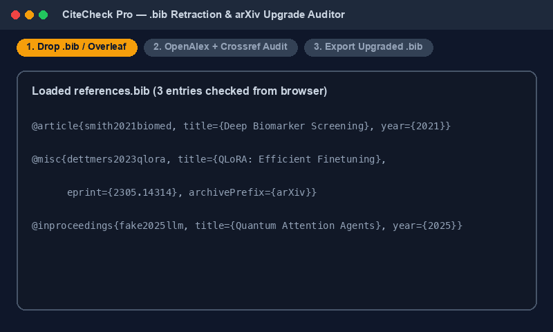

Audit .bib Files for Retracted Papers & Hallucinated AI Citations Locally
Citing a retracted paper or a subtly hallucinated LLM reference is one of the fastest ways to trigger a desk reject or ethics flag during peer review.
Why Researchers & Engineers Use CiteCheck
- Checks every .bib entry directly from your browser against OpenAlex, Crossref, and DBLP.
- Highlights confirmed retracted works with clear red severity alerts.
- Flags unverified/hallucinated entries plus year, DOI, venue, and first-author drift.
- Never uploads your manuscript text to a private third-party backend.
What CiteCheck Verifies Per Reference
[RETRACTED] smith2021biomed -> Retraction flag detected in Crossref/OpenAlex
[UPGRADE] dettmers2023qlora -> arXiv preprint published at NeurIPS 2023
[MISMATCH] vaswani2018attn -> Published year is 2017 (not 2018)
[UNVERIFIED] fake2025agent -> No credible match across OpenAlex / Crossref / DBLPVisual Walkthrough

Want offline Chrome Side Panel access, batch ZIP exports, or zero-dependency Python CLIs? Use starter code STARTER20 for 20% off any one-time Pro pack or the 6-tool bundle.
Frequently Asked Questions
How does CiteCheck detect retracted papers?
It inspects structured retraction metadata returned directly by public OpenAlex (`is_retracted`) and Crossref update-to retraction notices.
Does my unpublished paper get uploaded to your server?
No. CiteCheck has no custom backend; your browser queries only public scholarly metadata APIs for the bibliographic titles/DOIs.
Can it pull .bib files directly from Overleaf?
Yes. The Chrome Side Panel extension reads the active .bib tab in Overleaf in 1 click.
How many citations can I audit for free?
Up to 8 citations per batch are free with full diagnostics in the browser; CiteCheck Pro ($14 one-time) unlocks unlimited batch audits and 1-click repaired .bib / APA / GB/T 7714 exports.